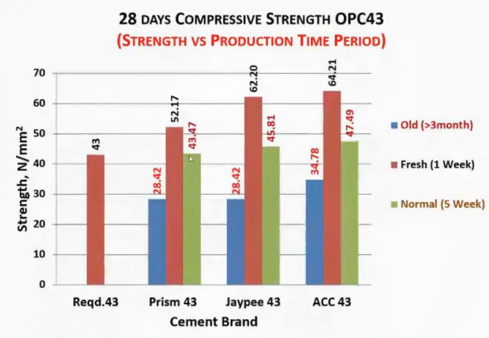

Quality Control
Table of Contents
- 1. IQ, EQ, MQ, SQ
- 2. Examples
- 3. 3C Relation
- 4. Quality Assurance Plan
- 5. Document special event
- 6. Saftey Measures
- 7. Crushing & Screening Plant (BBDMP)
- 8. Rebar Chararcteristics
- 9. Formworks
- 10. Real data (USEFUL) 7 days to 28 days strength ratio
- 11. Curing
- 12. Single cube failure is not failure
- 13. Aggregate Crusher
Civil Engineering Technical Workshop - Quality Assurance and Quality Control of RCC Structure
1. IQ, EQ, MQ, SQ
- Intelligence
- Emotional
- Moral
- Spiritual Quotient
2. Examples
[v:13:13]
Irrigation Strucutre, Banke (BS 2030) made using brick masonry is just fine but the RCC Irrigation Structure, Kailali (BS 2070) has failed due to lack of QA and Quality Control.
[v:14:00] Learing by doing <= previously Doing by learning <= nowadays
Knowledge => Skill => Attitude (Willingness & Sharing)
3. 3C Relation
Client -> Consultant -> Contractor Clients feel superior but Consultant are giving service Contractor sometimes get in difficulty due to design where consultant has to help If the project fails Client are in most loss. So everyone should feel at same level.
Figure 1: 3C Relation
4. Quality Assurance Plan
[v:28:31]
- Quality Assurance (QA)
- process oriented; focuses on defect prevention
- Management Tool
- Quality Control (QC)
- product oriented; focuses on defect identification
- Controlling tool
[v:40:46]
4.1. Hierarchy of Failures
Supervision -> Detailings -> Design
4.2. Average vs Multiplicative
If every step is 95% then average is 95% but quality is multiplication and in 7 steps it results to 70% quality.
5. Document special event
Document special event like
- the soil characteristics is different than expected
- contractor had to do extra work due to unforseen circumstance
- floods, …
6. Saftey Measures
Simple measures save from big troubles.
6.1. Boards, Ribbons
e.g. A simple `caution danger' ribbon saved the contractor from having to pay compensation when an woman jumped and died in the pit.
6.2. Check Cement quality
6.2.1. Manufacture date
- manufacture date must be printed on the cement bag

6.2.2. Lab test
6.2.3. Thumb rules
when lab test can't be done in rural plaes
- OPC - NS 572:2076 (43 & 53 Grade)
- PPC - NS 385:2054 (33 Grade)
Figure 5: Thumb rules when in remote places
7. Crushing & Screening Plant (BBDMP)
[v:1:04:34]
Figure 6: better aggregate had high impact on strength of concrete
8. Rebar Chararcteristics
TMT fail bhairanxa
9. Formworks
[v:1:17:00] IS 14687:1999
Figure 8: Upper - Failed; Lower - Good
Figure 9: Rusted rebars must be cleaned
Figure 10: Cover block or stones
Figure 11: Beam size must be less than column size
10. Real data (USEFUL) 7 days to 28 days strength ratio
For Concrete test [v:1:33:31]
for higher grade concrete requirement of M50 in 28 days requires 80% of 50 = 40 MPa strength at 7 days. not 3/4 of 50 = 37.5 MPa
11. Curing
Curing is extremely important Water during first 1,2,3 days is like अमृत and during first 7 days is like milk and upto 12-15 days is like water then after that its like air (no use)
12. Single cube failure is not failure
Figure 13: IS 456
13. Aggregate Crusher
- jaw crusher
- cone crusher
- impact crusher
use garera flakiness index control garera concrete ko strength high garna sakinxa.